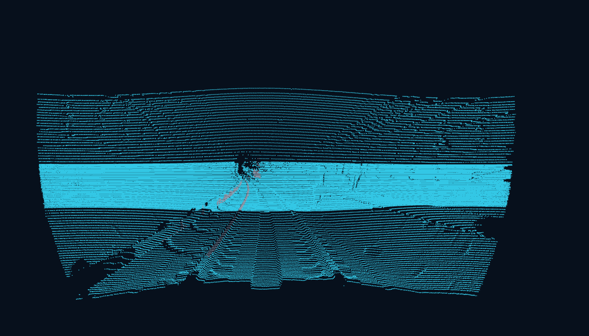
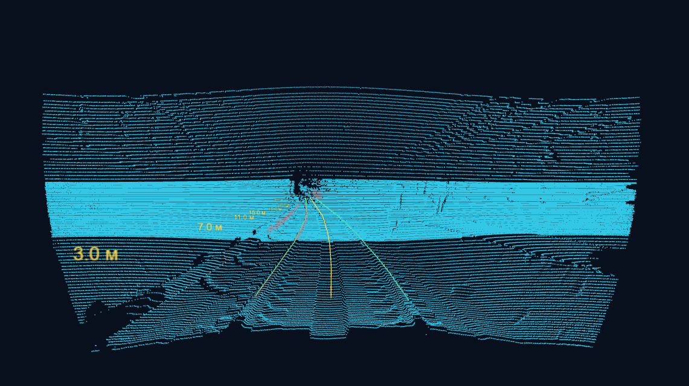
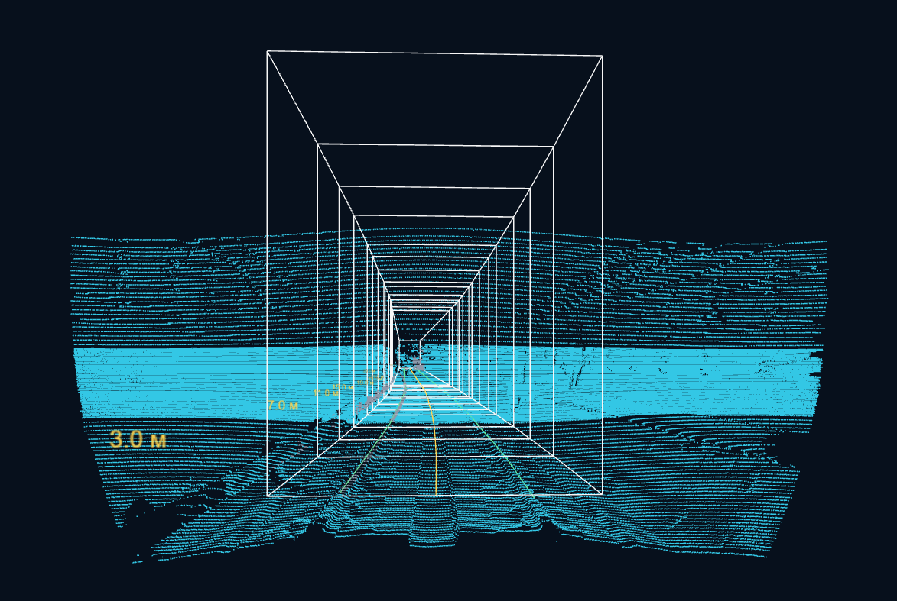
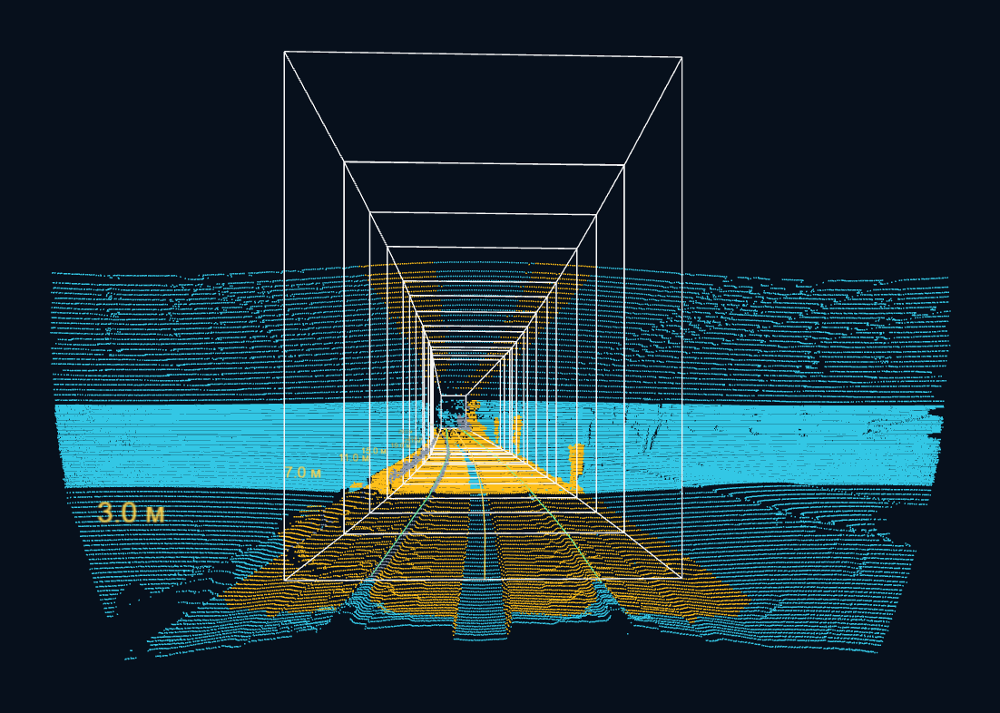
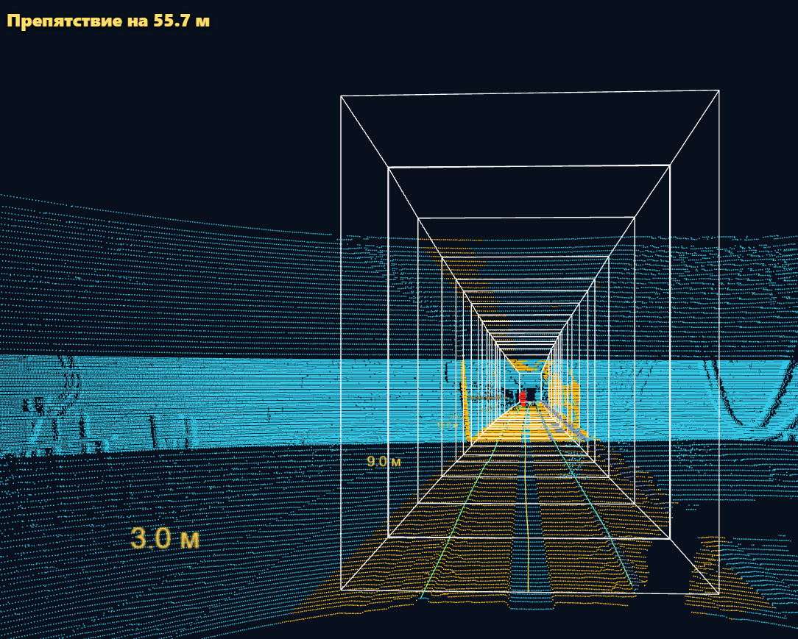

Обнаружение препятствий в тоннеле метро по 3D-лидару
Коротко о решении, архитектуре, алгоритме и проверенных результатах.
Заранее заметить объект, который может помешать движению поезда
Система получает 3D-облако точек от лидара и должна выдать предупреждение, расстояние до ближайшей опасной геометрии и диагностический статус.

Нам важнее не название объекта, а занимает ли он место поезда
Кабель, инструмент, ящик или человек выглядят по-разному. Но для безопасности главный вопрос один: попадает ли новая геометрия в контролируемый габарит движения.
Видим точки
Считываем реальное облако `PointCloud2` и отбрасываем некорректные координаты.
Строим коридор
По рельсам и оси пути строим область, где должен пройти поезд.
Ищем пересечение
Если группа точек внутри габарита, она становится кандидатом на препятствие.
От облака точек до предупреждения
Сначала понимаем, где путь
Рельсы и наблюдаемая ось дают системе привязку: где находится зона движения, в какую сторону смотреть и как считать расстояние.

Затем строим безопасный коридор поезда
Габарит превращает абстрактное облако точек в понятную проверку: всё, что занимает этот коридор, потенциально опасно.

Точки рядом с габаритом попадают в предупредительный слой
Это помогает видеть не только глубокое пересечение, но и объекты у границы. При сомнении система не говорит “путь свободен”, а оставляет статус `UNKNOWN`.

Три исхода вместо опасного “ничего не вижу”
Есть пересечение
Группа точек физически попадает в габарит или подтверждается temporal-assist логикой.
Есть кандидат
Ранний сигнал: объект похож на опасный, но это ещё не production safety-доказательство.
Недостаточно уверенности
Неполные данные, слабый объект или спорная геометрия не превращаются в `CLEAR`.
Препятствие найдено, расстояние показано в метрах
Текущий выход сообщает `intrusion_candidate_present`, ближайшую reportable-точку и диагностику. Расстояние считается от source LiDAR origin, не от носа поезда.

Короткие видео показывают, как подсветка появляется на сцене
Что уже измерено на доступных replay-источниках
Эти числа нужно представлять как воспроизводимый срез прототипа, а не как скрытый независимый test set.
Первые срабатывания на доступных positive windows
Это расстояния от source LiDAR origin. `80 м` в конфигурации остается горизонтом построения габарита, а не доказанной рабочей дальностью.
C++ detector compute укладывается в ориентир 10 Hz на проверенном bag
Замер: headless ROS2/C++ path, `diagnostics_detail=summary`, один development bag. Full end-to-end replay на целевом стенде ещё требует отдельной проверки.
Что можно заявлять уверенно, а что пока нет
Решение превращает сложное 3D-облако в понятный вопрос безопасности
Есть ли новая геометрия в пространстве, где должен пройти поезд?
Если да, система поднимает предупреждение и показывает расстояние. Если данных недостаточно, она честно говорит `UNKNOWN`.